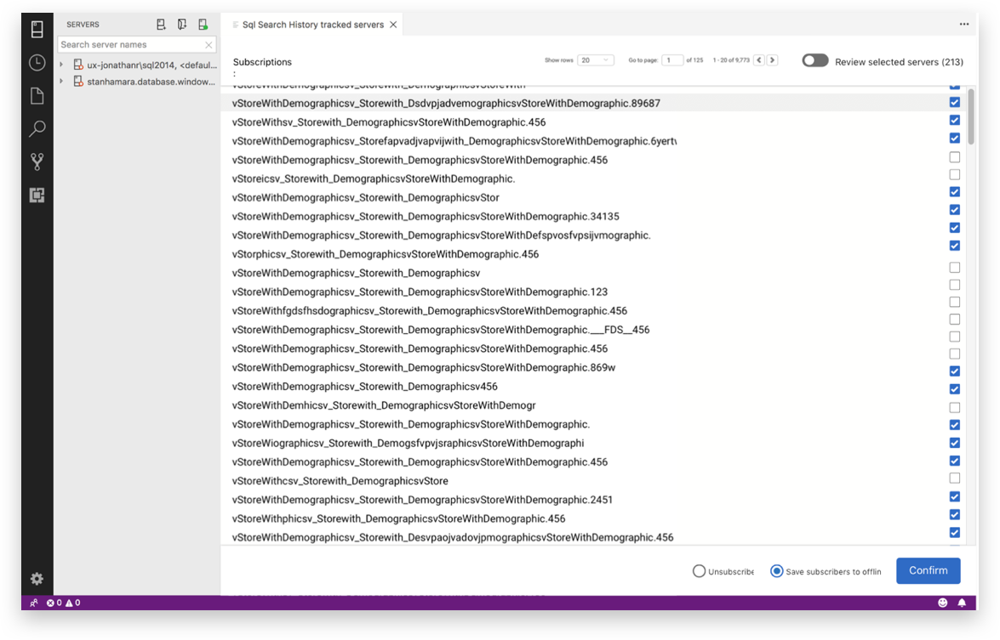

Redgate Software SQL Search Extension
Team Members: Callum Brown
My Role: Initial ideation, wire-framing, rapid-prototyping, high-fidelity digital prototyping
INTRODUCTION
Redgate’s SQL Search is an extension of SQL Operations Studio. This is a tool targeted towards a user base with limited SQL knowledge that aims to allow its users to easily parse through fragments of SQL in tables, and quickly navigate through hundreds of objects in a server.
TASK
SQL Search Extension is a tool that allows users with limited technical
knowledge to easily parse through fragments of SQL in tables, and quickly
navigate through hundreds of objects in a server they have connected to.
As a UX intern I was tasked with delivering a more streamlined and intuitive
experience in regards to how a user manages the servers they are connected
to by working to enhance the overall user experience of the tool.
METHODS
Given the infancy of this product and its consequent lack of users we adopted
a hypothesis-based approach wherein we began by identifying the following
key potential pain points, most of which centered around the fact that the
interface was not conducive to mass selection/modification, and that the
copy of the interface was confusing.
- Users are unable to efficiently manage their tracked connections because of the limited capabilities provided by the interface
- The interface copy is unclear and does not communicate what certain actions or components mean
Thereafter we created rapid paper prototypes of possible interfaces and
interactions, moving towards higher fidelity prototypes on Sketch later.
The first iteration of paper prototyping (pictured above) saw a design
that implemented a filtering system to allow for efficient selection, as
well as a split screen view that would allow users to compare their selections
alongside with all the available items they manage. The idea behind this
iteration was to allow for greater visibility and transparency in the design.
These designs were presented to the design team manager for feedback and
critique, which were then implemented into higher fidelity digital prototypes
using Sketch.
CHALLENGES
The highly technical product domain came with a steep learning curve
that made it difficult to empathize with users, as this was not a product
that I was ever going to be using in my day-to-day life.
However, I was able to leverage my technical background and knowledge of
SQL and data analysis concepts in order to translate technical requirements
into design decisions that led to an intuitive and usable experience.
OUTCOME
The final solution presented a more stripped back version of the initial
paper prototype, having decided against both the filtering and the split
screen view as what was initially seen as increased visibility was actually
more of an information overload.
The final solution implemented a checkbox and filtering system that was
more conducive to mass selection/modifications of tracked connections.
I also improved the copy of the interface to be more consistent and provide
a more reliable mental reference model for the user.

While we ultimately were not able to fully design and implement our final
solution due to time restrictions, given the extensive iteration process
that we went through we feel that we have left the team with strong and
actionable steps with which to move forward with the new UI.